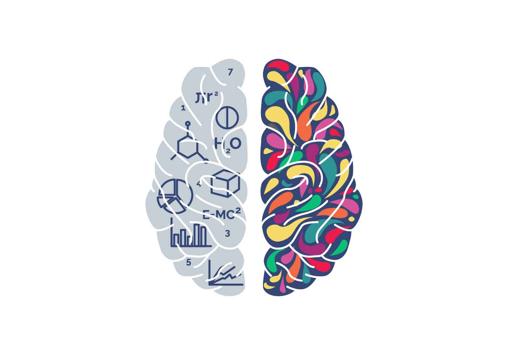

Diagnostico

Inicio de diagnósticoRecuerda: que no se guardará el progreso hasta que termines la primer
ronda de preguntas. Responderás 20 de ellas y tendrás 2 opciones: guardar
y salir o continuar. Tu progreso solo se guarda hasta que llegues al final de la ronda.
¡Animo!
{{dt.question}}